Les titres des projets, cours et interventions sont conservés dans leur langue d'origine.
2026 – aujourd'hui · Haute école de musique de Genève, Genève (CH)
Assistante artistique et de recherche au sein du projet REIMAGE (Fonds national suisse de la recherche scientifique).
2026 – aujourd'hui · Jetse Academie, Bruxelles (BE)
Enseignante invitée de musique médiévale.
2026 · Cité médiévale de Crémieu / Bourgoin-Jallieu (FR)
Atelier Music'astera : lecture et interprétation de la notation médiévale (avec Benjamin Ingrao).
2024 – 2025 · Abbaye de Royaumont (FR)
CREAC « Décaméron au Lycée » : atelier de création artistique pour des élèves de lycée.
2023 – 2024 · Conservatoire Hector Berlioz, Bourgoin-Jallieu (FR)
Enseignante de musique médiévale dans le cadre des Journées des Musiques Anciennes (avec Baptiste Chopin).
2022 – 2023 · Fondation Royaumont, Viarmes (FR)
Projet « En scène » : diffusion et enseignement théorique et pratique de la musique médiévale auprès des élèves des conservatoires du Val-d'Oise.
Co-directrice du stage « Perfectionnement de la pratique vocale médiévale – Ars Nova italien », avec Patrizia Bovi (Ensemble Micrologus).
2021 · Fondation Royaumont, Viarmes (FR) / Centro Studi Adolfo Broegg, Spello (IT)
Assistante de Patrizia Bovi (Ensemble Micrologus) pour le stage « Chanter l'Ars Nova italien ».
2018 – 2019 · Universidade de Santiago de Compostela (ES)
Enregistrement de pièces transmises par le Codex Calixtinus et le Pergaminho Vindel.
Recherche musicologique dans le cadre du projet « Patrimonio cultural da Eurorrexión Galicia-Norte de Portugal: valoración e innovación. GEOARPAD III, Piloto I – LÍRICA », dirigé par le Prof. Mariña Arbor Aldea.
2018 · Abbaye de Sant'Antimo, Montalcino (IT)
Co-directrice du stage « Per amore cantare : i grandi laudari toscani », avec Francesca Breschi (Ensemble Dialogo).
2016 – 2018 · Fondazione Ezio Franceschini, Florence (IT)
Collaboratrice au volume 2016-2017 de la revue Medioevo Musicale.
Rédaction et révision de notices bibliographiques pour la base de données MEM.
3 août 2023 · Centro Studi Adolfo Broegg, Spello (IT)
Communication « Musical Microcosms in the Reina Codex. A Practical Guide to the Ars Nova Manuscripts ». XIVe cours international de musique médiévale.
9 mars 2023 · Schola Cantorum Basiliensis, Bâle (CH)
Donnerstag-Akademie « The Fourteenth-Century Siciliana: Problems and Proposals between Edition and Performance Practice ».
28 avril 2022 · Université de Lausanne, Lausanne (CH)
Conférence-concert « Flamenca et la musique du Moyen Âge. Déconstruction d'une reconstruction ».
5 juillet 2019 · Schola Cantorum Basiliensis, Bâle (CH)
Conférence-concert « Editing and Performing the Fourteenth-Century Siciliane », avec Patrizia Bovi (Ensemble Micrologus). 47e Medieval and Renaissance Music Conference (MedRen 2019).
4 juin 2019 · Abbaye de Morimondo (IT)
Conférence-concert « Le addizioni tardive dello Chansonnier du Roi : segno, suono, performance », avec Alexandros Hatzikiriakos. Colloque international « Philologie et musicologie – Lingua e musica nei corpora cantati del Medioevo e del Rinascimento » (4e rencontre franco-italienne).
25 mai 2019 · Bologne (IT)
Communication « La Siciliana trecentesca : problemi e proposte tra edizione e performance ». XXIIIe rencontre des doctorants italiens en musicologie.
12 novembre 2018 · Fondazione Ezio Franceschini, Florence (IT)
Conférence-concert « Dall'edizione critica all'esecuzione musicale : il caso di Nicolò del Preposto », avec le Prof. Antonio Calvia et Patrizia Bovi (Ensemble Micrologus). Journée d'étude « Musica viva : per Clemente Terni nel centenario della nascita ».
20 juin 2018 · Université de Bologne (IT)
Communication « Con novo guardo che move d'Amore : itinerario nell'universo sonoro dantesco ». Colloque AlmaDante 2018.
20 juillet 2017 · Centro Studi Adolfo Broegg, Spello (IT)
Communication « Stella mi doni lume : per un'indagine delle relazioni intertestuali tra Nicolò del Preposto e Lorenzo da Firenze ». VIIIe cours international de musique médiévale.
8 juillet 2017 · Prague (CZ)
Communication « Sovra la riva d'un corrente fiume : Literary and Political References in Lorenzo Masini's Madrigals ». 45e Medieval and Renaissance Music Conference (MedRen 2017).
16 décembre 2016 · Certaldo Alto (IT)
Communication « Amor m'indusse ov'i' cantar sentia : musica e poesia nell'opera di Lorenzo da Firenze ». Colloque international « Ars Nova tra musica e letteratura: temi e problemi di filologia e critica ».
7 octobre 2016 · Terni (IT)
Conférence-concert « Diverse voci fanno dolci suoni : riferimenti musicali nella Divina Commedia », organisée par la Società Dante Alighieri.
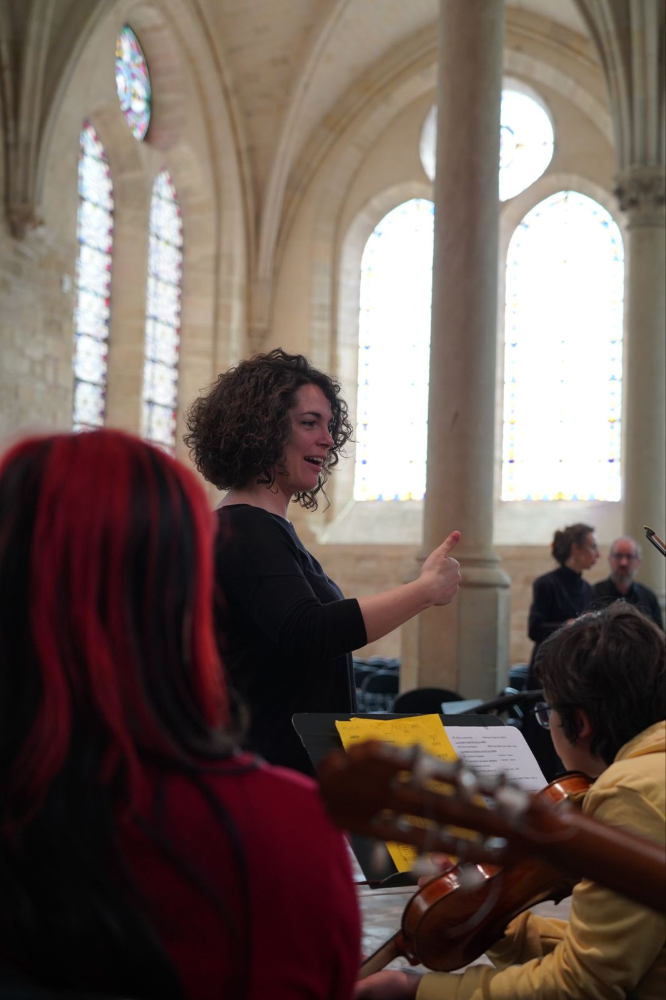
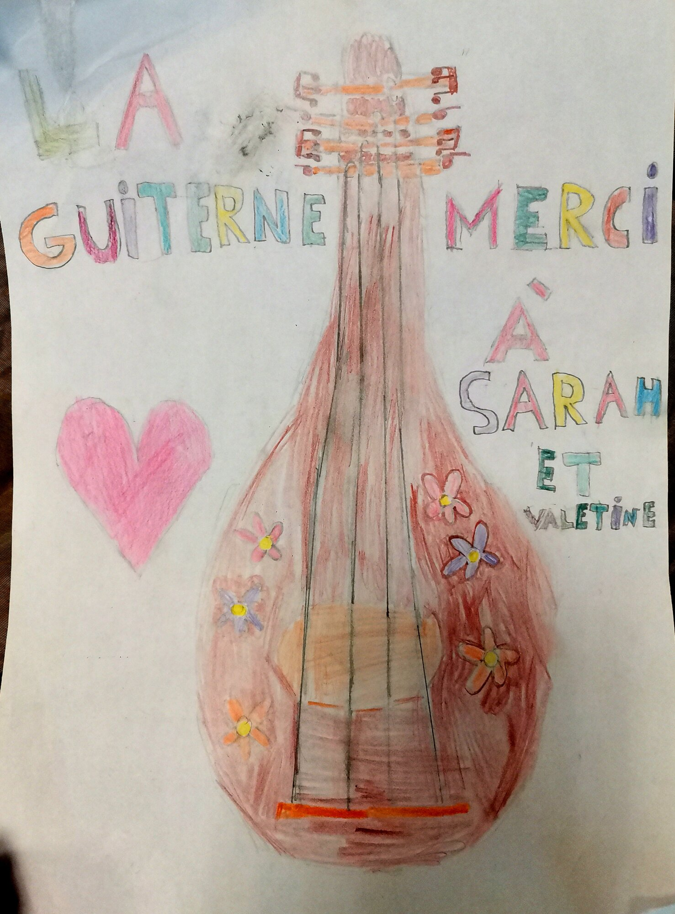
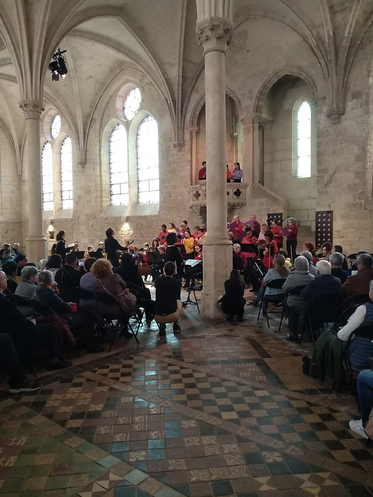
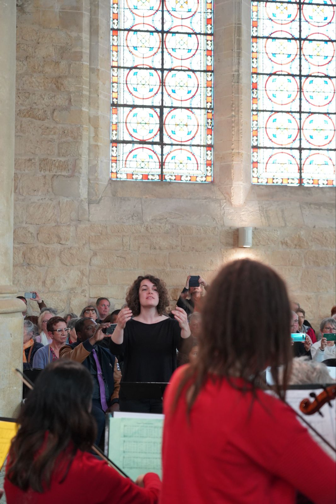
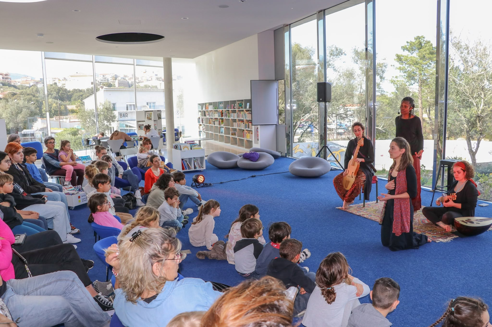
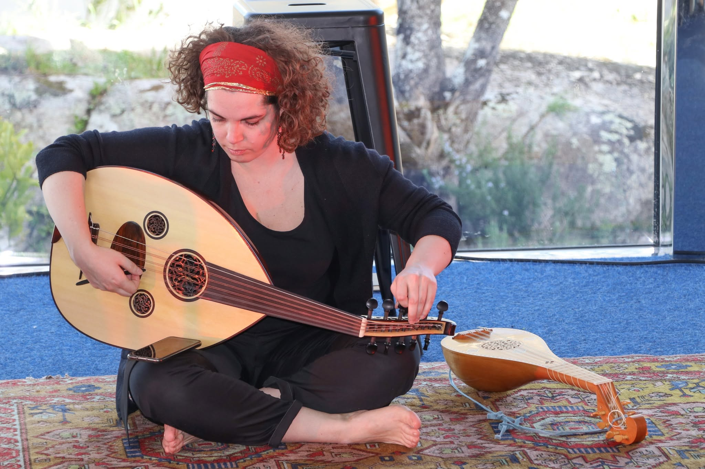
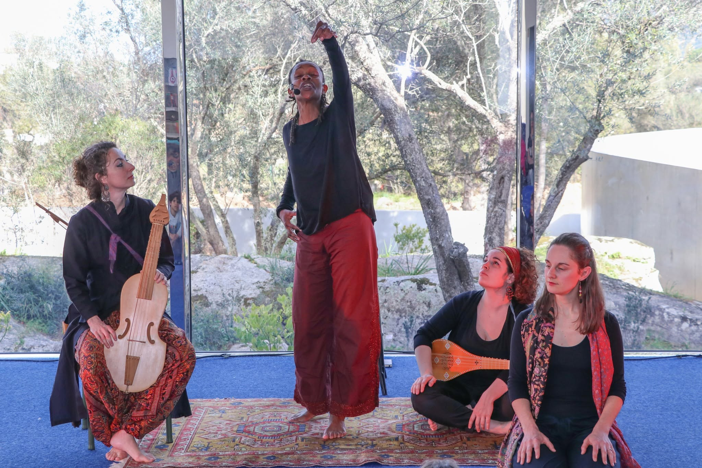
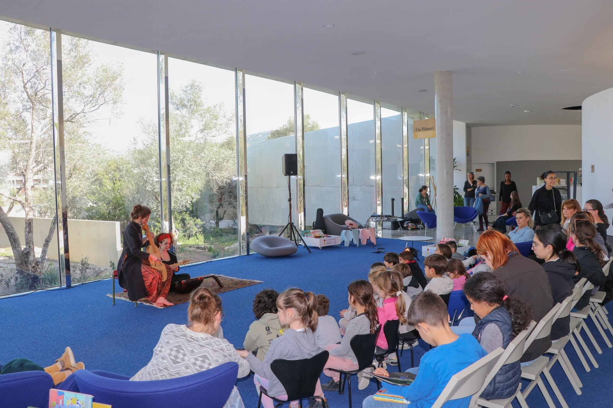
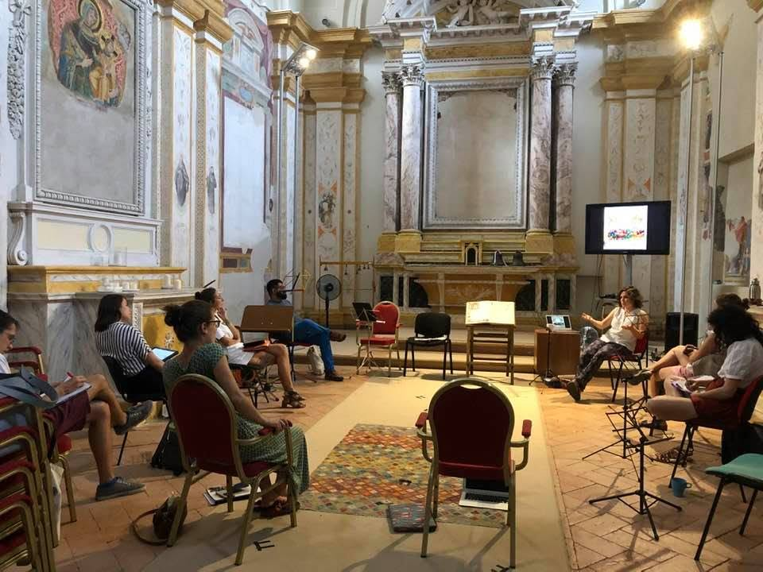
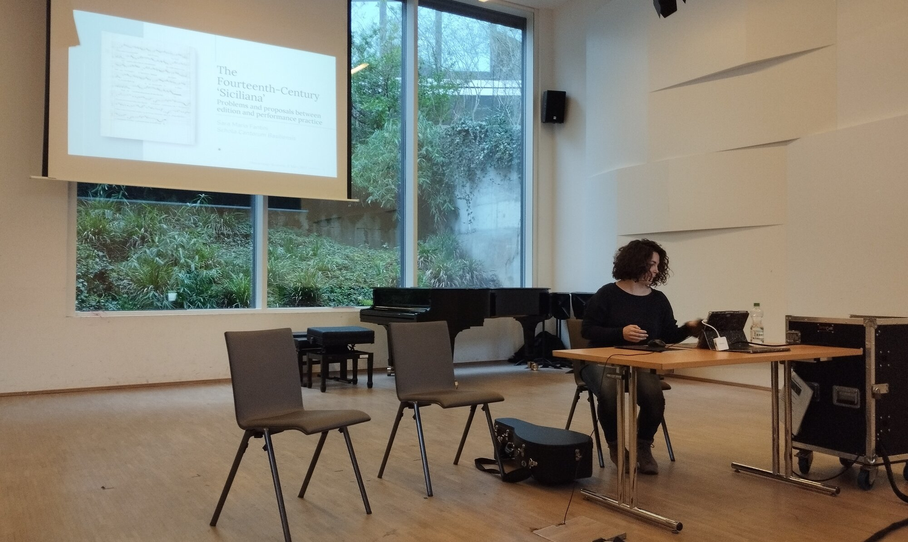
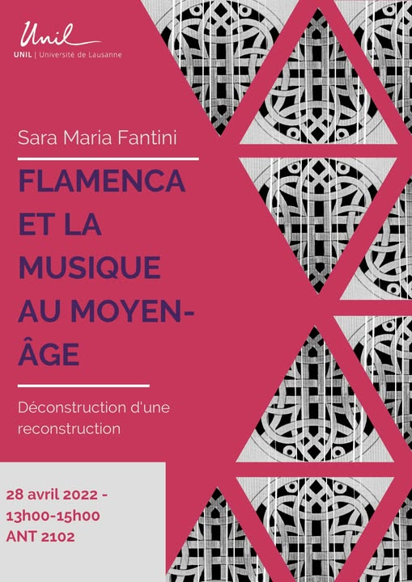
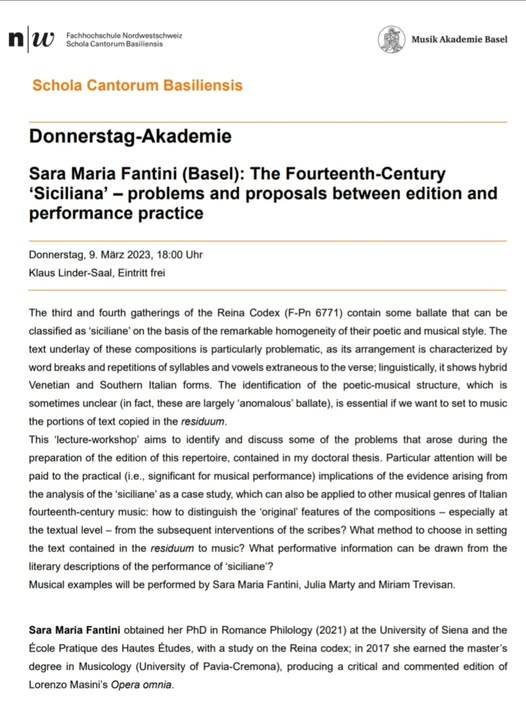
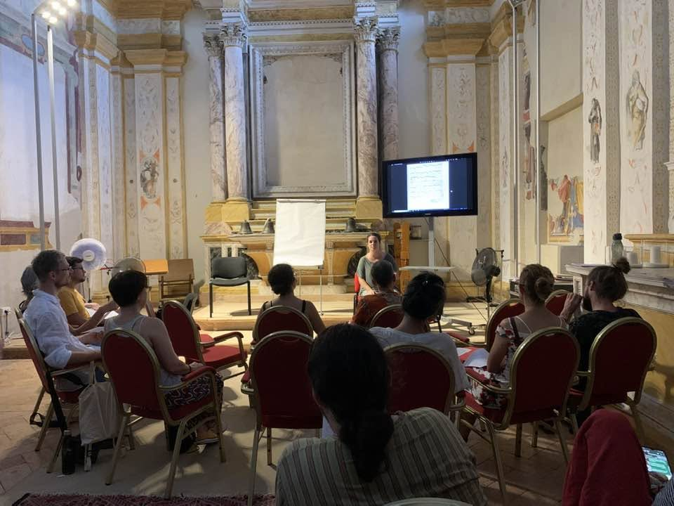